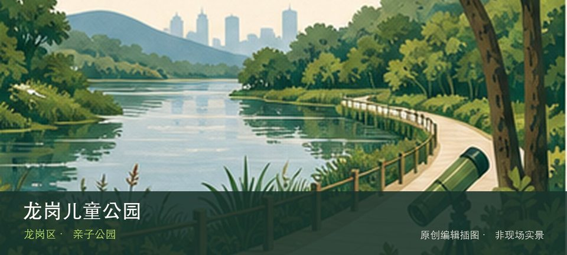

适合谁
适合亲子和自然教育，但体验高度依赖孩子体力、活动日与设施开放情况。

SHENZHEN GUIDE · 179
龙城 · 亲子公园
龙岗儿童公园位于龙岗中心城，大型无动力与主题游乐设施服务亲子客群，热门设备的预约、排队和身高限制比公园面积更影响体验。从大型儿童游乐设施转向分龄活动空间时，地点的空间、历史或使用方式才会变得清楚。带孩子到访时，可把大型儿童游乐设施与分龄活动空间转化为两项能够完成的观察任务，不必追求看完所有设施。活动、花期和设备开放受日期影响，先确认预约、遮阴、饮水与返程条件。
WHY GO
适合亲子和自然教育，但体验高度依赖孩子体力、活动日与设施开放情况。
提前查预约、设备检修和身高规则，只选两项核心设施；先安排遮阴休息和饮水，不在正午排长队。
公共交通先到龙岗中心城片区，再以龙岗儿童公园公开参观入口为终点；多入口地点须按计划游线选择入口，并预先锁定返程站点。
导航至龙岗儿童公园官方开放入口配套或邻近正规公共停车场；周末满位即改乘公共交通，不在绿道口、村道或消防通道临停。
秋冬与春季通常更舒适；花期、采摘和节庆随日期变化，夏季避开正午并预留防暑避雨方案。
NEARBY IDEAS
 编辑配图·非现场实景
编辑配图·非现场实景
龙城公园绿道位于龙城公园闭合环线，新建约8.6公里并连接原有4.4公里的公园绿道，以城市山体、湖景和运动节点构成闭合慢行网络。
 编辑配图·非现场实景
编辑配图·非现场实景
龙城公园位于龙岗中心城，山体、台阶和中心城视野提供一小时左右的短登高，社区入口多但不同入口的坡度与返程方向差异明显。
 编辑配图·非现场实景
编辑配图·非现场实景
深圳市龙岗区怡利翡翠博物馆位于龙西，从翡翠原石、矿物结构到雕刻和成品展示材料价值链，重点应放在材质与工艺而非零售价格。